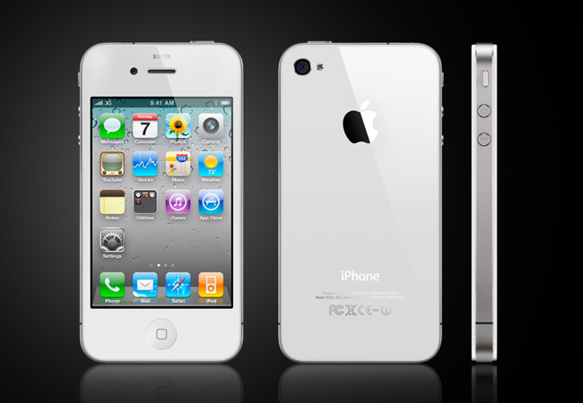

During 2012, the Iphone was very popular, especially when the 4S came out because you could ask it questions and it would answer. The Iphone also had alot of cool apps from games to dictionaries, the store had it. As for technology in ten years, I do not think it will advance much but it will just get faster and more slim.
